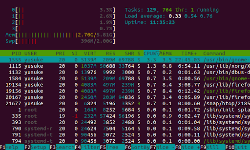
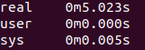

OpenMPI
Primary MPI Routines
int MPI_Init(int * argc, char ** argv);
// initializes the MPI environment.
// Argc argv are the parameters come
// from main(argc,argv). The return value is an
// error code. 0 is OK. Non-zero is an error code
int MPI_Comm_size(MPI_Comm comm, int \* size);
// this functions gets the number of MPI processes
// i.e. the number you enter when you go mpirun -np \<size> myprog.exe
// *size is C syntax indicating that size will be modified to contain
// the value after the function returns. The return value is only used
// for error detection. printf(“MPI size is %d\n”,size);
int MPI_Comm_rank(MPI_Comm comm, int \* rank);
// this returns the rank of this particular process
// rank contains the value for that process- the function return value is an error code

Point-to-Point communication
These are blocking functions - they wait until the message is sent or received. Note that the CPU is actively polling the network interface when waiting for a message. This is opposite in behaviour to other C functions, i.e. c= getChar() (which causes a context switch and then a sleep in the OS). This is done for speed reasons.
int MPI_Send(void * buf, int count, MPI_Datatype type, int dest, int tag, MPI_Comm comm);
Sends a message from the calling process to another process
INPUT PARAMETERS
buf- Initial address of send buffer (choice).
count- Number of elements sent (non negative integer).
type- DataType of each send buffer element (handle).
dest- Rank of destination (integer).
tag- Message tag (integer).
comm- Communicator (handle).
OUTPUT PARAMETER
IERROR- Fortran only: Error status (integer).
int MPI_Recv(void * buf, int count, MPI_Datatype type, int source, int tag, MPI_Comm comm, MPI_Status * status);
Receives a message from another process
INPUT PARAMETERS
count- Maximum number of elements to receive (integer).
type- DataType of each receive buffer entry (handle).
source- Rank of source (integer).
tag- Message tag (integer).
comm- Communicator (handle).
OUTPUT PARAMETERS
buf- Initial address of receive buffer (choice).
status- Status object (status).
IERROR- Fortran only: Error status (integer).
Primary MPI Routines closing
In a header file you will find
int MPI_Finalize(void);
To call in your C or C++ program
#include <mpi.h>
MPI_Finalize();
General overview MPI program
...
int MPI_Init(int argc, char ** argv);
--------------------------Parallel algorithm starts----------------------
int MPI_Comm_size(MPI_Comm comm, int * size);
int MPI_Comm_rank(MPI_Comm comm, int * rank);
...
int MPI_Send(void * buf, int count, MPI_Datatype type, int dest, int tag, MPI_Comm comm);
int MPI_Recv(void * buf, int count, MPI_Datatype type, int source, int tag, MPI_Comm comm, MPI_Status * status);
…
--------------------------Parallel algorithm ends-----------------------
int MPI_Finalize(void);
...
Use man pages to find out more about each routine
When sending a Process it packs up all of its necessary data into a buffer for the receiving process. These buffers are often referred to as envelopes since the data is being packed into a single message before transmission (similar to how letters are packed into envelopes before transmission to the post office)
Elementary MPI Data types
MPI_Send and MPI_Recv utilize MPI Datatypes as a means to specify the structure of a message at a higher level. The data types defined in the table below are simple in nature and for custom data structures you will have to define the structure.
| MPI datatype | C equivalent |
|---|---|
| MPI_SHORT | short int |
| MPI_INT | int |
| MPI_LONG | long int |
| MPI_LONG_LONG | long long int |
| MPI_UNSIGNED_CHAR | unsigned char |
| MPI_UNSIGNED_SHORT | unsigned short int |
| MPI_UNSIGNED | unsigned int |
| MPI_UNSIGNED_LONG | unsigned long int |
| MPI_UNSIGNED_LONG_LONG | unsigned long long int |
| MPI_FLOAT | float |
| MPI_DOUBLE | double |
| MPI_LONG_DOUBLE | long double |
| MPI_BYTE | char |
Example of a simple program
/*
MPI Program, send ranks
*/
#include <stdio.h>
#include <mpi.h>
#define MASTER 0
int main(int argc, char *argv[])
{
int my_rank;
/* Also known as world size */
int num_processes;
/* Initialize the infrastructure necessary for communication */
MPI_Init(&argc, &argv);
/* Identify this process */
MPI_Comm_rank(MPI_COMM_WORLD, &my_rank);
/* Find out how many total processes are active */
MPI_Comm_size(MPI_COMM_WORLD, &num_processes);
printf("Process %d: There is a total of %d \n", my_rank, num_processes);
if (my_rank == MASTER)
{
int dest = 1;
int tag = 0;
int count = 1;
MPI_Send(&my_rank, count, MPI_INT, dest, tag, MPI_COMM_WORLD);
printf("Process %d: Sent my_rank to process %d \n", my_rank, dest);
}
else
{
int tag = 0;
int count = 1;
int buffer;
MPI_Recv(&buffer, count, MPI_INT, MASTER, tag, MPI_COMM_WORLD, MPI_STATUS_IGNORE);
printf("Process %d: Received %d from process %d \n", my_rank, buffer, MASTER);
}
/* Tear down the communication infrastructure */
MPI_Finalize();
return 0;
}
Compilation and Linking
- Make sure you have the following packages installed and that they are in your $PATH:
- gcc
- OPENMPI or MPICH
- To compile and Link:
mpicc -Wall -o <program-name.exe> <program-name.c>- -Wall This enables all the warnings about questionable code.
- -o sets the output executable name. If you omit it, it defaults to a.out
- To run:
mpirun -np <Number-of-processes> <program-name.exe>
- Behind the scenes:
- mpicc is just a wrapper around a C compiler. To see what it does type:
mpicc –showme
- mpicc is just a wrapper around a C compiler. To see what it does type:
sbatch to send job to compute nodes using SLURM
#!/bin/bash
#SBATCH --job-name=Vaccinator
#SBATCH --ntasks=4
#SBATCH --ntasks-per-node=4
#SBATCH –time=00:10:00
~/vf38/HPC_Training/spack/share/spack/setup-env.sh
spack load mpich
mpirun -np 4 ./my-awesome-program
https://docs.massive.org.au/M3/slurm/mpi-jobs.html
- ntasks Controls the number of tasks to be created for the job
- ntasks-per-node Controls the maximum number of tasks per allocated node
- cpus-per-task Controls the number of CPUs allocated per task
Measuring performance
htopto check the CPU usage. You need to run this command while the process is running- If you are using SLURM, you will need to use
squeueorscontrolto find the compute node it is running on and then ssh into it. timeis a shell command to check the overall wall time , i.e.time mpirun -np 4 myProg.exe- You can also use a MPI profiler
There are some useful commands to check the parallelism of the code. The command top or htop looks into a process. As you can see from the image below, it shows the CPU usages

- The command
timechecks the overall performance of the code- By running this command, you get real time, user time and system time.
- Real is wall clock time - time from start to finish of the call. This includes the time of overhead
- User is the amount of CPU time spent outside the kernel within the process
- Sys is the amount of CPU time spent in the kernel within the process.
- User time +Sys time will tell you how much actual CPU time your process used.
